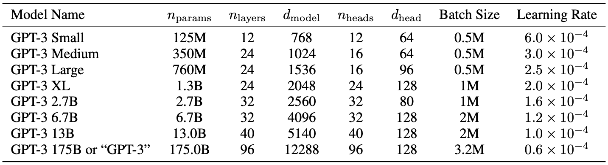
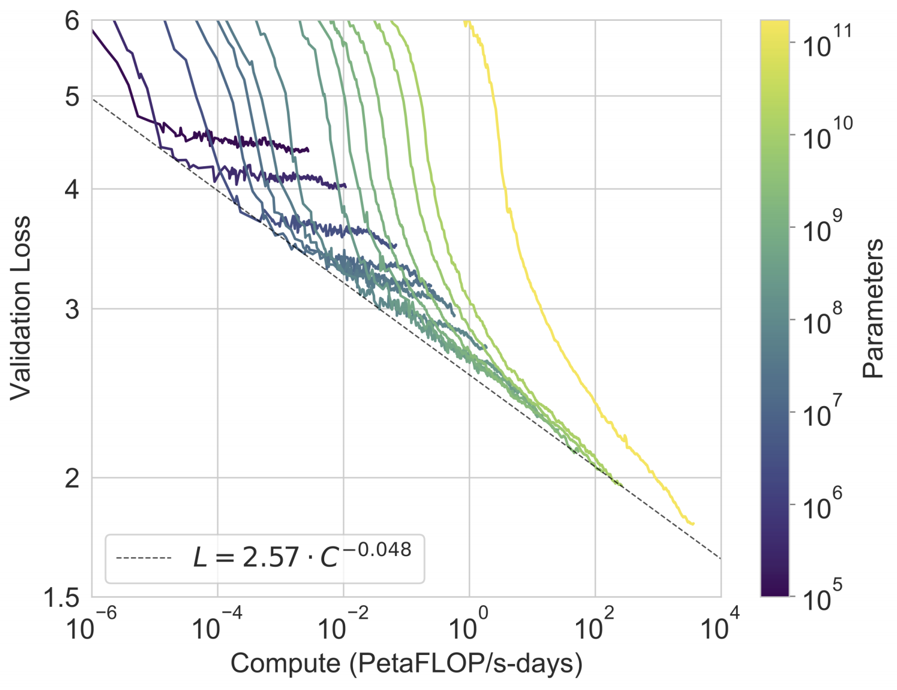
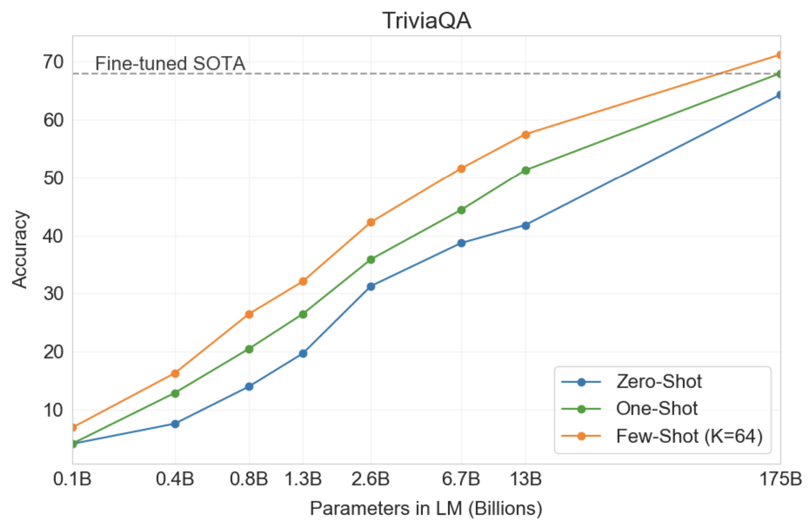
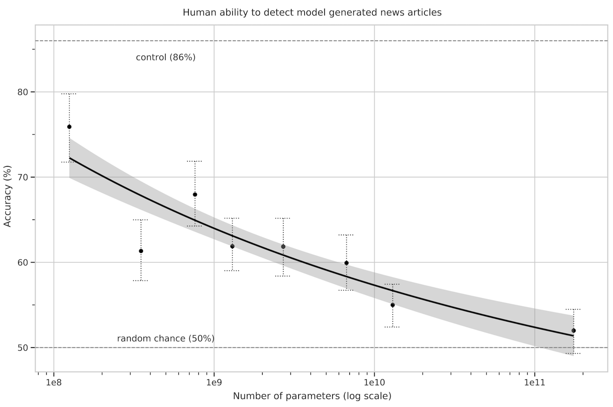

A few days ago, OpenAI announced a new successor to their Language Model (LM) - GPT-3. This is the largest model trained so far, with 175 billion parameters. While training this large model has its merits, reading a large portion of 72 pages can be tiresome. In this blog post I’ll highlight the parts that I find interesting for people familiar with LMs, who merely wish to know the important points of this work.
What’s in a Language Model?
"The diversity of tasks the model is able to perform in a zero-shot setting suggests that high-capacity models trained to maximize the likelihood of a sufficiently varied text corpus begin to learn how to perform a surprising amount of tasks without the need for explicit supervision"
This is an excerpt from the paper accompanying GPT-2. GPT-3 is taking another step in this avenue.
More specifically, the authors pinpoint the drawbacks of fine-tuning using task specific datasets. - Getting these datasets is difficult. - Fine-tuning allows the model to exploit spurious correlations, which lead to bad out-of-distribution performance. - A brief directive in natural language is usually enough for humans to understand a given task. This adaptability is a desired property of NLP systems.
The route the authors chose to take is "in-context learning” - feeding the model a task specification (prompt) and/or a few demonstrations of the task as a prefix, priming it towards a subspace in the latent space that adheres to the given task. Translation, for instance, would look like "Q: What is the {language} translation of {sentence} A: {translation}”.
This is based on the assumption that the model develops a broad set of skills and pattern recognition abilities at training time, and then uses those abilities at inference time to rapidly adapt to or recognize the desired task.
It’s a common wisdom that low perplexity is correlated with performance on downstream tasks, so one can hope that bigger models will yield better in-context capabilities. And indeed, this holds true, as can be seen in the next figure, where a simple task requiring the model to remove random symbols from a word is tested:

The number of in-context examples varies between 10 to 100, since this is typically what’s permitted with the model’s context size of 2048. Prompt (task specification) plays a significant role when the number of examples is low.
The authors tested many well known benchmarks, but first - let’s inspect the model specification.
Heavy Weight Lifting
GPT-3 is made up of a Transformers-based architecture similarly to GPT-2, including the modified initialization, pre-normalization, and reversible tokenization described therein, with the exception that it uses alternating dense and locally banded sparse attention patterns in the layers of the transformer, similar to the Sparse Transformer.
The authors trained several model sizes, varying from 125 million parameters to 175 billion parameters, in order to measure correlation between model size and benchmark performance.

Show me your data and I'll show you your future
The authors took three steps to improve the average quality of the datasets: - They downloaded and filtered a version of CommonCrawl based on similarity to a range of high-quality reference corpora. - They performed fuzzy deduplication to prevent redundancy and preserve the integrity of the held-out validation set. - They added known high-quality corpora to the training mix.

Show me the numbers
In the next figure we can see that the power-law of LMs still holds:

To test if the pretrained validation loss is correlated with downstream task performance, the authors evaluated an exhaustive list of known NLP benchmarks by feeding K examples from the training set in-context to evaluate an example from the test set. In the paper they detail all the benchmarks, but here I chose to describe only a small sample:
Language Modeling
While forced to skip many language modeling perplexity related datasets due to containment in training data, PTB escapes this issue due to predating the modern internet, and GPT-3 sets a new SOTA.
LAMBADA
In this task, the model has to predict the last word of a given sentence. It has recently been suggested that the continued scaling of LMs is yielding diminishing returns on this difficult benchmark. And yet, GPT-3 achieved 76% accuracy in the zero-shot setting - a gain of 8% over the previous SOTA.
In the few-shots setting, the task can be framed as the cloze task (filling in the blanks), making it easier for the model to understand that only one word is required. This yields an accuracy of 86.4%.
Closed Book Question Answering
In this task, GPT-3 is superior to the SOTA which not only fine-tunes on the task, but also uses an Information Retrieval component to retrieve pieces of texts that are likely to contain the answer. This suggests that LMs continue to absorb knowledge as their capacity increases.

SuperGLUE
GPT-3 appears to be weak in some tasks that require a comparison between two sentences, including determining whether a word is used the same way in two sentences, whether one sentence is a paraphrase of another, or whether one sentence implies another.
News Article Generation
The authors asked human evaluators to distinguish between human and machine generated news articles. As model size increases, participants got lower accuracy scores despite increased time investment per news article. This supports the finding that larger models generate harder-to-distinguish news articles.

There's a lot of memorization that goes on in school
Accurately detecting test contamination from internet-scale datasets is a new area of research without established best practices. As model capacity increases, the risk of memorization increases. At large, the authors removed documents that have overlap with the test set. However, due to a bug, this process had leftovers. They tried to assess the damage, and it seems like the model doesn’t memorize, and (most of) the results are valid.
(My own note: maybe it is time for more rigorous testing in the ML field as a whole, like what’s customary in other fields.)
Limitations
While qualitatively GPT-3 is better than its predecessor, its text synthesis ability still incurs the weak spots we’re familiar from other LMs, such as repetitions, coherence loss over sufficiently long passages, and contradiction.
In addition, in some of the tasks GPT-3 failed miserably. This might be due to the choice to use an autoregressive LM, instead of incorporating bidirectional information (similarly to Bert). While in-context learning is more straightforward with autoregressive LMs, bidirectional models are known to be better at downstream tasks after fine-tuning. At the end, training a bidirectional model at the scale of GPT-3, and/or trying to make bidirectional models work with few-shot learning, is a promising direction for future research.
A more fundamental limitation is that autoregressive (and bidirectional) models may eventually run into (or could already be running into) the limits of the pretraining objective. Making the task better, e.g. understanding what is most important to predict (such as entities), might benefit the model. Grounding the model in other domains of experience, such as video or real-world physical interaction, might move the needle as well.
An evidence that the pretraining task is not optimal is sample efficiency: GPT-3 sees much more text during pre-training than a human sees in their lifetime. Improving pre-training sample efficiency is an important direction for future work, and might come from grounding in the physical world to provide additional information, or from algorithmic improvements.
Furthermore, with self-supervised objectives, task specification relies on forcing the desired task into a prediction problem, whereas ultimately, useful language systems (for example virtual assistants) might be better thought of as taking goal-directed actions rather than just making predictions.
Another limitation, or at least uncertainty, associated with few-shot learning in GPT-3 is ambiguity about whether few-shot learning actually learns new tasks "from scratch” at inference time, or if it simply recognizes and identifies tasks that it has learned during training.
Last but not least, the size of the model incurs practical inconvenience. Distillation, which has not been tried at this scale, is an interesting direction.
Comments !